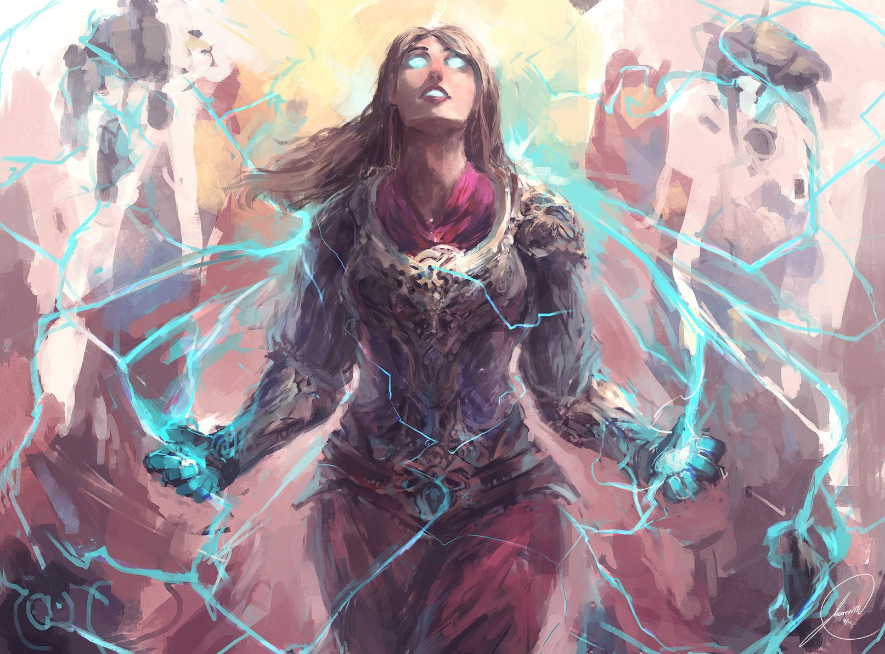

Éveillé
Environnement général : Aucun en particulier, l'éveil peut survenir à travers l'entièreté de l'arbre-monde.
Conditions d'obtention : Dans des conditions extrêmes, au plus près de la mort, lorsque l'on refuse de rejetter ses idéaux, que l'on s'attache fermement à défendre ses ambitions.
Qui est éligible ? Tous les pleuples de tout l'Yndrill sauf ceux du Balcon de la Destinée, bien que certaines races sont moins prônes que d'autres à s'éveiller, en raison de leur nature même.
Effets : Léger rallongement de l'espérance de vie - Nouvelle compétence de soin passive - Un point de compétence au choix
Statut devant être obtenu en RP
L'éveil :
Les grâces des dieux trouvent leur chemin vers l'heureux élu lorsque celui-ci se trouve au plus bas, mais refuse d'abandonner (par exemple à la fin d'un combat, juste avant le coup fatal qui l'achèvera).
Le champ de bataille tombera alors dans le silence complet, étouffant les coups d'épées et les hurlements alentour, les sanglots des martyrs et les trébuches des soldats, et s'emplira de lumière aveuglante. L'âme de celui qui a été choisi s'élèvera au plus près du divin, transcendant tous les plans de l'existence, et ouvrira son œil, contemplant la réalité. Elle retombera enfin dans son corps guéri de toute blessure, rassasiée d'énergie, plus puissante que jamais, forte de son nouveau statut: éveillée.
Distinction divine, don de la nature, puissance intérieure ou encore bonne fortune, quelles que soient vos convictions, si vous les respectez et les défendez avec vaillance, vous pourriez découvrir votre pleine puissance, de la main de votre dieu, ou de la votre.

On ne naît pas éveillé, on le devient.
Nombre d'OC éveillé sur Yndrill: -